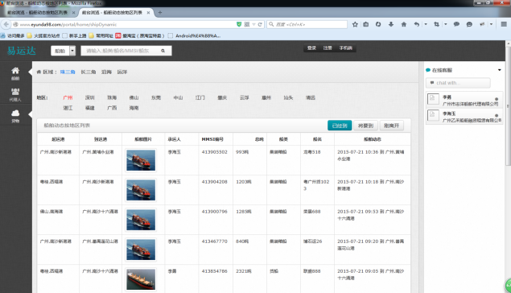

我要找船简介
平台通过船舶监控和船舶动态上报功能，实时分析出该船舶的位置和装载情况，实时的呈现在货主面前， 货主只要点击货物所在地，就能看到适合装该货物的所有船只，做到了货物的即时、快捷运输，促进了商业的发展。
功能操作
用户登入后，进入主页面，如上图所示。页面上方下拉选默认选中船舶，可在搜索输入框中输入“船类/船名/MMSI/船代”，点击搜索进行精确查找。 也可以点击左侧“船舶”菜单，选择其子菜单“分类”或“船舶动态”分别查找。
用户点击“分类”子菜单，进入如上图所示页面，用户可点击船舶类别进行查找所需类别船舶。

用户点击“船舶动态”子菜单，进入如上图所示页面。用户选择不同的地区后，再选择在该地区三种不同的船舶动态“已经到”、“将要到”、“刚离开”后， 就可以查看到在该地区不同船舶动态下的所有船舶。
用户通过以上方法查看到的船舶会在当前列表中显视出来，选择列表中一条船舶，进入如上图所示页面， 用户可以在这里查看到该船舶的详细情况。选定该船舶后，可点击“我有货要运”按钮进入到合同编辑页面，可以起草合同， 关于合同编辑帮助可查看“功能介绍”下“合同签定”菜单项。也可点击“收藏”按钮收藏该船舶，收藏的船舶可进入船舶登记菜单项查看到。